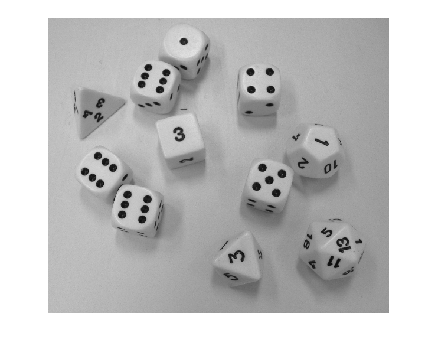
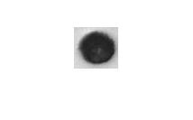
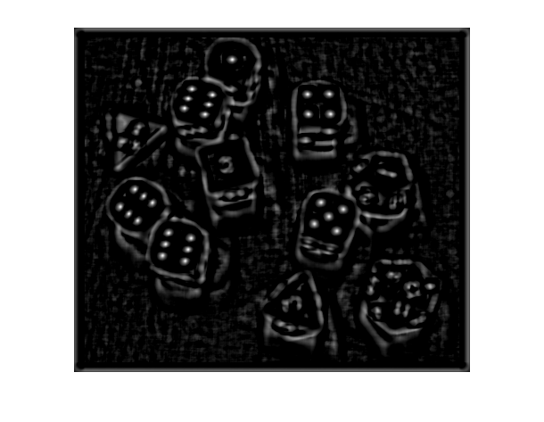
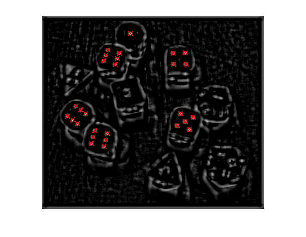

Busqueda de patrones en una imagen
Contents
Imagen de test
Utilizaremos como ejemplo una imagen con varios dados. El patrón que deseamos buscar corresponde a un punto.
img=imread('291.jpg');
img=rgb2gray(img);
imshow(img);
Warning: Image is too big to fit on screen; displaying at 33%

Patrón
Cargamos la imagen del patron
patron=imread('punto.jpg');
patron=rgb2gray(patron);
imshow(patron);

Correlación del patrón con la imagen
Calculamos la correlación normalizada entre el patrón y la imagen Al ser una correlación normalizada, los valores de salida están comprendidos entre -1 (el patrón y la imagen son opuestos) y 1 (el patrón y la imagen son iguales).
xcimg=normxcorr2(patron,img); imshow(xcimg);
Warning: Image is too big to fit on screen; displaying at 25%

Búsqueda de los máximos
Los puntos en los que se identifican los puntos son los máximos que se observan en la imagen de la correlacion. En la imagen inicial hay 28 puntos similares al patrón, para buscar 28 máximos usaremos la función houghpeaks. Para ello, hay que convertir la imagen de la correlación a una imagen de dobles en los que no haya parte decimal.
xcimg2=round(xcimg*2^10); % Pasamos al rango -2^10 a 2^10 picos=houghpeaks(xcimg2,28); % Cada fila guarda la fila y la columa de un pico imshow(xcimg); hold on; % indicamos que vamos a usar los ejes como en las imagenes % y superponemos los puntos identificados axis ij; plot(picos(:,2),picos(:,1),'rx','LineWidth',2,'MarkerSize',10); hold off; % Observar que los puntos que aparecen en las caras laterales no son detectados. % Esto es debido a que el patrón está deformado por efecto de la perspectiva con % lo que el valor de la correlación es bajo.
Warning: Image is too big to fit on screen; displaying at 25%
